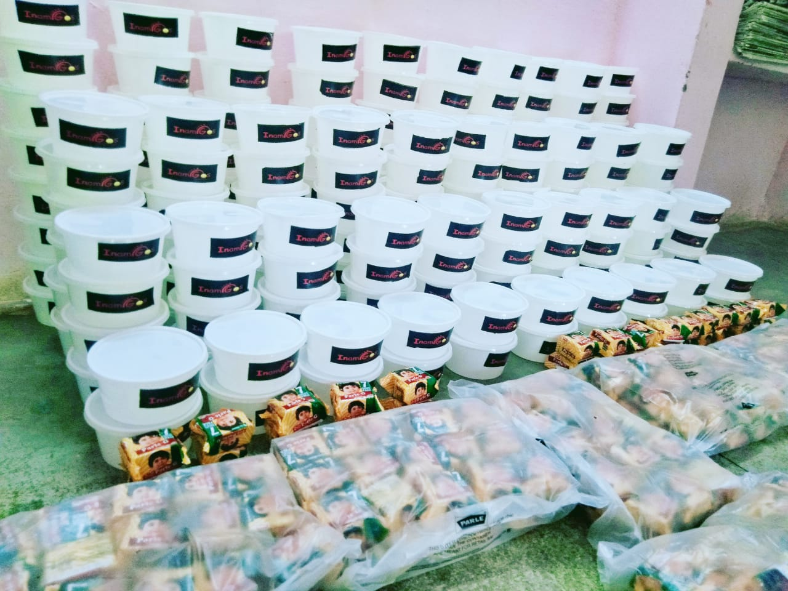
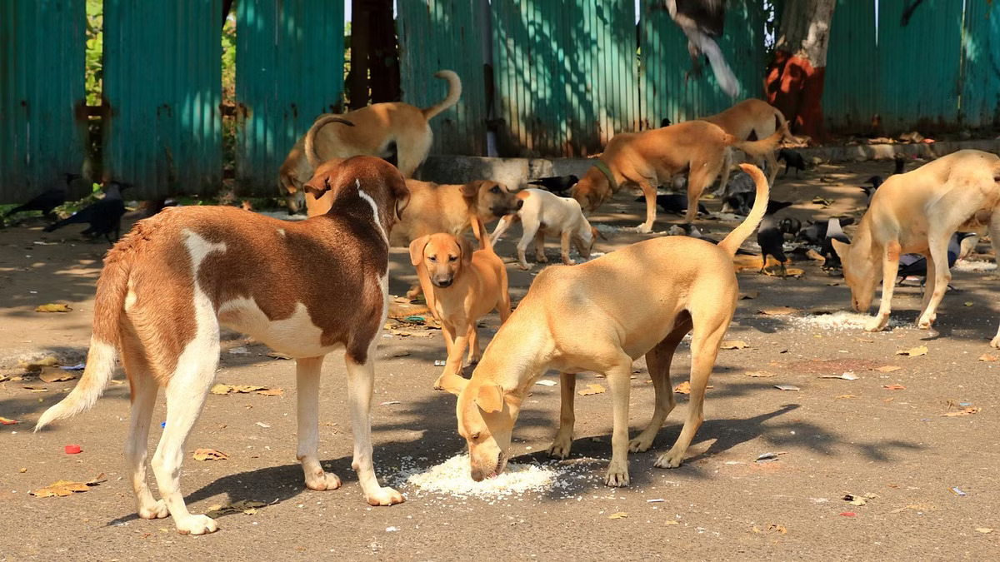

50,000+
Meals & Clothing Distributed

InAmigos Foundation is a Section 8 registered non-profit organization dedicated to creating meaningful social impact through education, women empowerment, environmental sustainability, youth development, community welfare, and animal care.

About Us
InAmigos Foundation is a Section 8 registered non-profit organization founded on 23 September 2020 by Mr. Govind Shukla.
The organization works to create positive social impact by empowering communities through education, environmental sustainability, women empowerment, youth development, and animal welfare.
By connecting volunteers, professionals, students, and communities, the foundation strives to build a more compassionate, inclusive, and sustainable society.
Uniting Minds For Change
To empower communities through sustainable social initiatives that improve lives and create lasting positive impact.
Our Impact
50,000+
Meals & Clothing Distributed
30,000+
Interns Trained
20,000+
Saplings Planted
50+
Stray Animals Fed Daily
Our Initiatives
InAmigos Foundation runs six flagship projects, each addressing critical social needs — from education and food security to environmental conservation and women empowerment.

Providing food, clothing, and essential support to underprivileged communities. Focus areas include food distribution, clothing drives, and community support.

Improving access to education for underprivileged children. Focus areas include basic education, digital literacy, learning support, and child development.

Promoting animal welfare and compassionate care. Focus areas include feeding stray animals, animal care, and animal protection.

Empowering women through education and skill development. Focus areas include skill development, financial independence, rural women empowerment, and menstrual hygiene awareness.

Promoting environmental sustainability. Focus areas include tree plantation, environmental awareness, and sustainable practices.

Preparing young people for successful careers through internships and practical learning. Focus areas include internship opportunities, skill development, professional experience, and career readiness.
Our Gallery


Get Involved
Whether you volunteer your time, contribute your skills, or support our initiatives, every action helps create lasting change in the lives of individuals and communities.
Social Impact
Creating Meaningful Change
Every initiative undertaken by InAmigos Foundation is designed to improve lives, strengthen communities, and create sustainable social impact.
Education
Supporting children through quality education and learning opportunities.
Women Empowerment
Helping women become financially independent through skills and awareness.
Environmental Sustainability
Building greener communities through plantation drives and environmental campaigns.
Community Welfare
Supporting vulnerable communities through food distribution, social initiatives, and volunteer efforts.